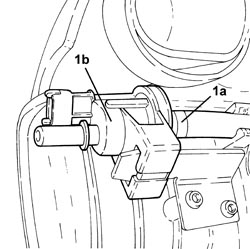
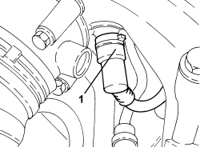
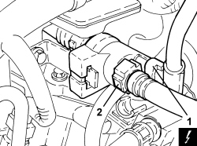

1080E28 ENABLEMENT SOLENOID FOR FLOW OF FUEL VAPOUR TO INLET - R+R
- Path
- Procedures > 10 ENGINE > 1080 EMISSION CONTROL SYSTEM > 1080E EVAPORATION CONTROL SYSTEM > 1080E28 ENABLEMENT SOLENOID FOR FLOW OF FUEL VAPOUR TO INLET - R+R
- Kind
- repair procedure (removal / refitting; the operation number is the code)
- Applies to
- engines: 1.9 JTS, 2.2 JTS, 3.2 JTS; all production periods
- Interactive page
- https://sloeber94.github.io/elrnDB/alfa/159/en/#/939010630
Applies to: engines: 1.9 JTS, 2.2 JTS; all production periods
 Removing
Removing
 Refitting
Refitting- Make sure that the ignition key is in the OFF position, then disconnect the battery terminal (-).
Description | Connector | |
|---|---|---|
- | Battery |
Op. 1048A34 SLEEVE(S) FROM FLOW METER TO AIR SUPPLY CAPACITY CASE - R + R
Op. 1056F17 THROTTLE BODY WITH DVL R R
Op. 1072B50 AIR CHAMBER - R.R.
1. Loosen the band (1a) and remove the fuel vapour enablement solenoid valve to the intake (1b) after having disconnected it from the pipe and released it from the mounting bracket on the chamber.

Applies to: engines: 1.9 JTS, 2.2 JTS; all production periods
Refitting
Removing- Refit the solenoid enabling the passage of fuel vapours to the intake, secure it to the mounting bracket, connect it to the pipe and tighten the band.
Op. 1072B50 AIR CHAMBER - R.R.
Op. 1056F17 THROTTLE BODY WITH DVL R R
Op. 1048A34 SLEEVE(S) FROM FLOW METER TO AIR SUPPLY CAPACITY CASE - R + R
- Connect the negative battery terminal.
Applies to: engines: 3.2 JTS; all production periods
Removing
Refitting1. Disconnect the rapid connector for the fuel vapour supply pipe, intake chamber side.

Applies to: engines: 3.2 JTS; all production periods
1. Disconnect the electrical connection for the solenoid valve.
Description | Connector | |
|---|---|---|
1 | Fuel vapour recovery solenoid valve |
2. Disconnect the rapid connector for the solenoid valve fuel vapour inlet pipe.
- Remove the solenoid valve from the support complete with intake chamber fuel vapour supply pipe.

Applies to: engines: 3.2 JTS; all production periods
- Disconnect the rapid connector and then disconnect the solenoid valve from the fuel vapour supply pipe to the intake chamber.
Applies to: engines: 3.2 JTS; all production periods
Refitting
Removing- Connect the rapid connector and then the solenoid valve to the fuel vapour supply pipe to the intake chamber.
- Place the solenoid valve in position on the support complete with intake chamber fuel vapour supply pipe.
- Connect the rapid connector for the solenoid valve fuel vapour inlet pipe.
- Connect the electrical connection for the solenoid valve.
- Connect the rapid connector for the fuel vapour supply pipe, intake chamber side.
Topics linked from this page (5)
- 1048A34 SLEEVE(S) FROM FLOW METER TO AIR SUPPLY CAPACITY CASE - R + R
- 1056F17 THROTTLE BODY WITH DVL R R
- 1072B50 AIR CHAMBER - R.R.
- A001 BATTERY
- L010 FUEL VAPOUR RECOVERY SOLENOID VALVE
Topics that link to this page (6)
- E5030 PETROL ENGINE ELECTRONIC MANAGEMENT - WIRING DIAGRAM
- E5030 PETROL ENGINE ELECTRONIC MANAGEMENT - COMPONENT LOCATION
- E5030 PETROL ENGINE ELECTRONIC MANAGEMENT - WIRING DIAGRAM
- E5030 PETROL ENGINE ELECTRONIC MANAGEMENT - COMPONENT LOCATION
- E5030 PETROL ENGINE ELECTRONIC MANAGEMENT - WIRING DIAGRAM
- E5030 PETROL ENGINE ELECTRONIC MANAGEMENT - COMPONENT LOCATION